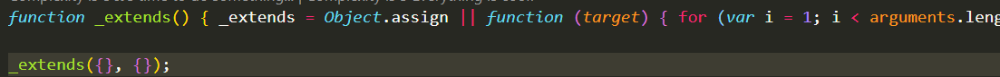
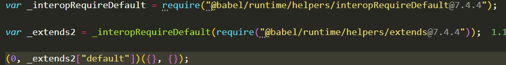

@babel/runtime和babel-plugin-transform-runtime的作用
实验一
不配置 presets，只配置@babel/plugin-transform-object-assign，转码为：

通过定义了一个_extends()方法，代替 Object.assign()。也就是把代码定义到了目标文件中。后果就是多个文件重复定义。
实验二
不配置 presets，配置@babel/plugin-transform-object-assign、@babel/plugin-transform-runtime，转码为：

即，使用 runtime 中的 helpers，将转码文件作为 1 个单独的文件引入，从而减小打包体积。
【注】检查上面 2 个包的源码，没有引入 core-js。
实验三
不配置 presets，只配置@babel/plugin-transform-runtime，不转码。
实验四
配置 presets，检查配置和不配置@babel/plugin-transform-runtime 是否有区别。
结论：没有区别，说明@babel/plugin-transform-runtime 并没有起任何作用。
实验五
配置 presets，也配置@babel/plugin-transform-object-assign、@babel/plugin-transform-runtime，转码为：
结论：和实验二一样，说明插件先于 presets 执行。
实验六
配置 presets，增加 generator、import，比较配置和不配置@babel/plugin-transform-runtime 是否有区别。
结论：有区别：
区别 1：将_interopRequireDefault 提取到外部作为 1 个文件，可以减小一点点代码。
区别 2：generator 函数，既引入了 regenerator-runtime，又引入了@babel/runtime/regenerator，最后使用的还是@babel/runtime/regenerator，regenerator-runtime 没起作用。
其他没有区别，包括也实验过其他语法，都没有区别，也就 generator 函数有区别。
总结
@babel/plugin-transform-runtime 要起作用，必须是上步转码有_extends 这样将代码注入到转码文件中的情况。@babel/plugin-transform-runtime 的作用是提取注入到转码文件提取出来。
安装@babel/plugin-transform-runtime 还需要安装@babel/runtime，但@babel/runtime 内的代码并没有引入 core-js 和 generator，而是使用的 helpers。听说，这个 helpers 是通过命令行也是由 core-js 和 generator 生成的，因此可以保持一致。
经查，@babel/preset-env 已经也是使用的代码引入，没有注入代码，只是在引入外部包的时候，会在每个文件内定义 interopRequireDefault。@babel/plugin-transform-runtime 可以提取 interopRequireDefault，但对于 generator 函数又会增加一点代码。所以是否引入@babel/plugin-transform-runtime，需要权衡 import 和 generator、async 的使用。